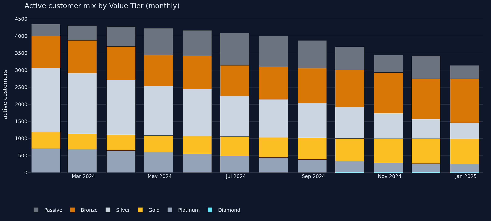
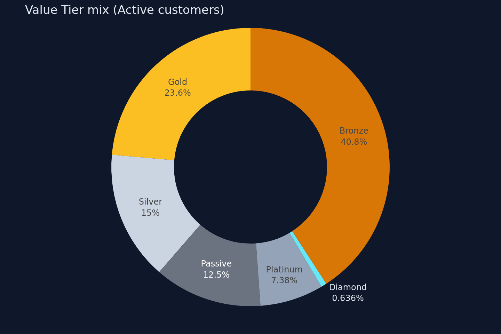
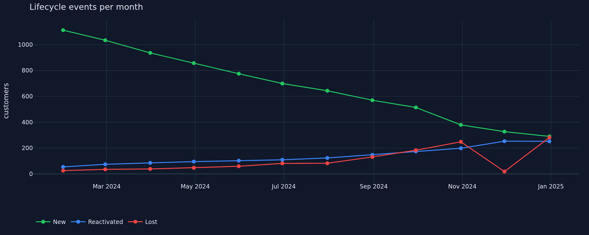
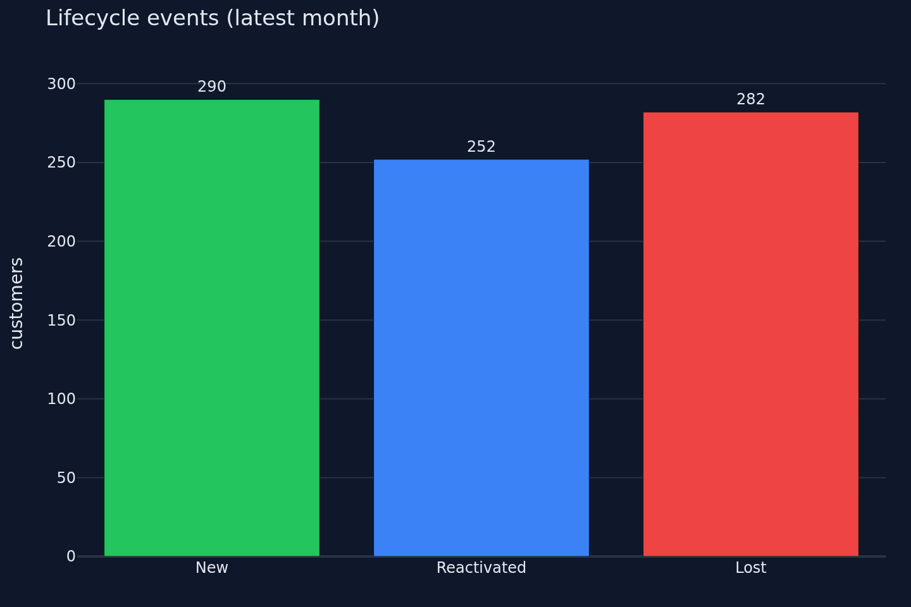

Turn raw transactions into a live customer scoreboard. Spot your VIPs, catch churn before it costs you, and act on the right segment — all from a dashboard that fits in your pocket.

Built on a stack you already trust
Stop exporting CSVs. Stop building one-off pivot tables. Get a single living snapshot of every customer — updated monthly, segmented automatically, ready to act on.
A six-tier ladder — Diamond, Platinum, Gold, Silver, Bronze, Passive — updates every month based on consumption, basket size and frequency. Your sales team always knows where to focus.
See it in actionLifecycle events flag every customer who just left or just came back. Save the relationship before the next renewal — and celebrate the wins when they return.
See lifecycle eventsWatch your value-tier mix shift month over month. Did the new pricing push more customers into Gold? Did the spring campaign reactivate churned accounts? You'll know in seconds.
See trendsThe Value Tier ladder turns six months of purchases into a one-glance picture of customer worth. Diamond customers get the white-glove treatment. Bronze customers get the next-step nudge. Passive customers get the win-back campaign.

Every month, every customer gets one of three lifecycle flags — New, Lost, or Reactivated — computed from cumulative purchase windows. No machine-learning black box. No magic. Just rules a CFO would sign off on.

The whole dashboard ships as a single static page. Bootstrap 5 means it works on a 4-inch iPhone, a 27-inch monitor, or anything in between. No app store, no install — just a URL.

One snapshot, four perspectives. Each role gets the slice they need — without waiting on the data team.
Run campaigns against precise tier segments. Target Reactivated customers with thank-you nudges. Target Passive customers with win-back offers.
Know who to call next. Diamond and Platinum customers always at the top, with a fresh list every month based on real purchase behaviour.
See the unfiltered customer story without scheduling a BI ticket. One URL, every metric, every month.
A clean, AI-ready snapshot table you can extend. Plug in LLMs, forecasting, or BI tools — all the heavy SQL is done.
No proprietary lock-in. Every layer is open and well-known — so any data analyst, engineer or AI agent can audit, extend, or self-host the system in an afternoon.
No setup wizards. No accounts. No SaaS bills.
Three CSVs — customers, products, transactions — or use the built-in synthetic generator to test the pipeline end-to-end.
python scripts/generate_data/generate.py
One command builds the SQLite database, runs the segmentation SQL for the last 12 months, and writes the customer snapshot.
python db/build.py
Generate the static site and host it anywhere — GitHub Pages, S3, your laptop. Zero servers, zero subscriptions.
python scripts/build_report.py
| Excel pivot tables | Heavy BI tool | CRM Analytics | |
|---|---|---|---|
| Time to first dashboard | days | weeks | 5 minutes |
| Auditable segmentation rules | partial | ||
| Mobile dashboards | paid add-on | ||
| Your data leaves your machine | sometimes | always | never |
| Monthly cost | $0 | $$$ | $0 forever |
| AI / LLM extensibility | vendor-locked | open schema |
Open the live dashboard now — no signup, no install, no email required. Just click and explore.